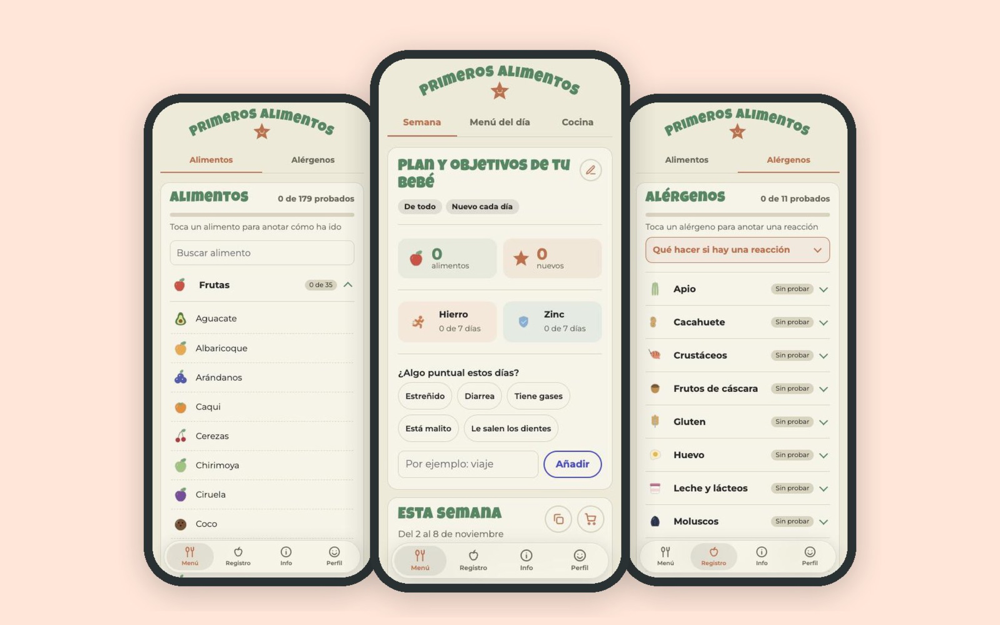
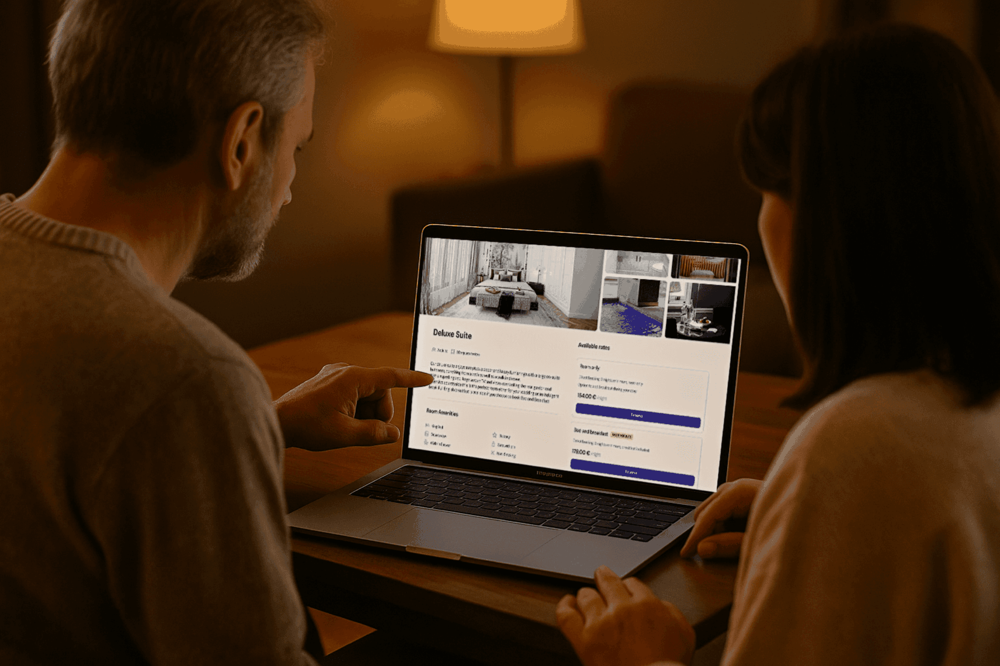
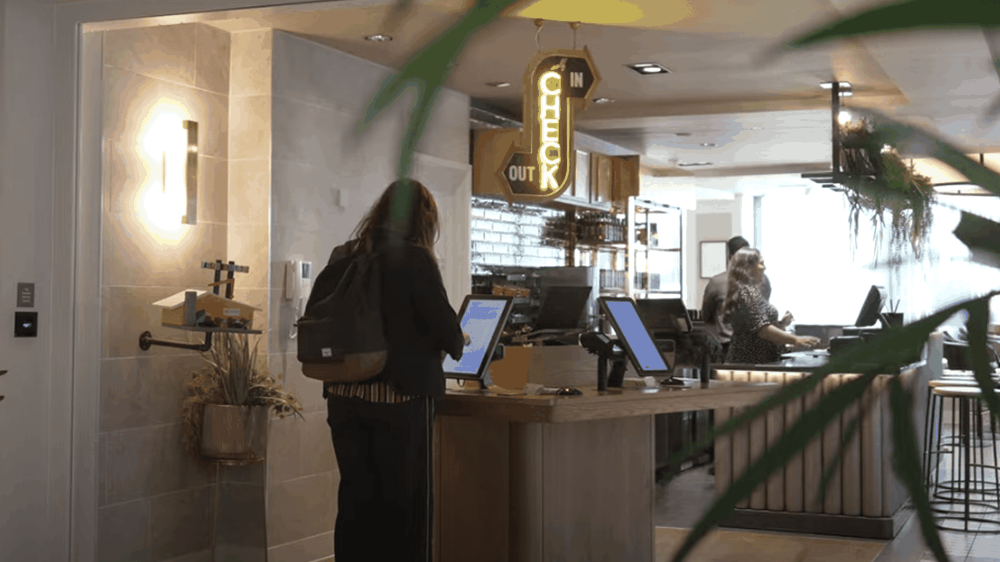
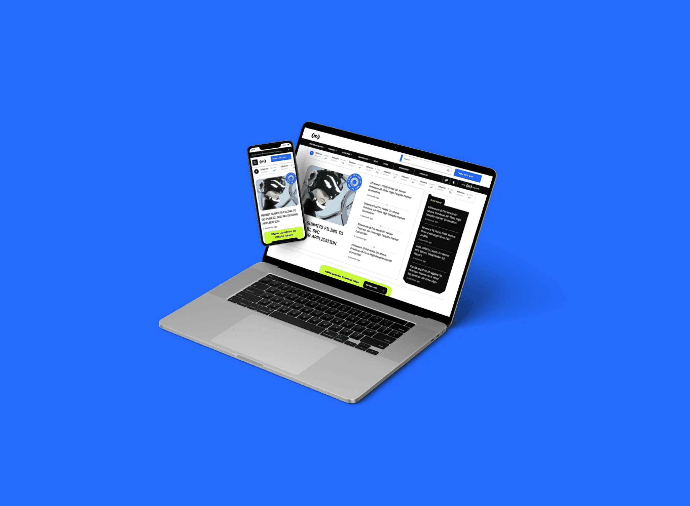
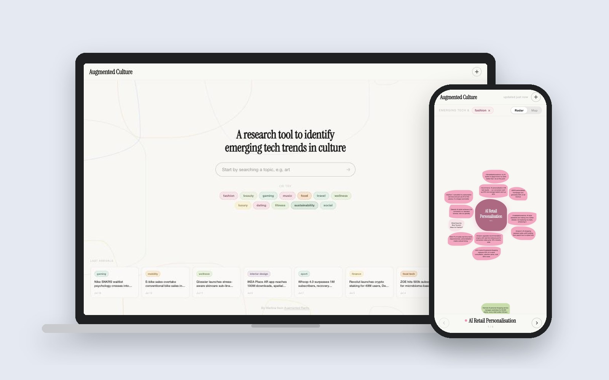
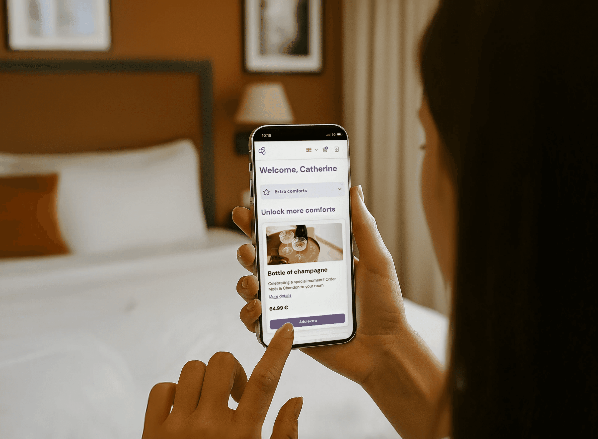

Hola! Soc la Martina
Senior Product Designer
Dissenyo productes SaaS B2B, mòbils i amb IA de principi a fi, des de la recerca amb usuaris fins a la interfície llançada i els sistemes de disseny. El més recent: productes per a hostes en una plataforma hotelera amb més de 3.500 hotels.
Oberta a noves feines i projectes freelance · En remot
Últims projectes
Primeros Alimentos
Una app de baby-led weaning que he dissenyat i desenvolupat, ara en proves amb famílies reals a iOS i Android.

Augmented Culture
Una eina de recerca que vaig dissenyar per detectar tendències tecnològiques emergents en la cultura, convertint senyals dispersos en tendències que pots explorar.
Direct Booking Manager
Modernitzar el motor de reserves que els hotels integren al seu propi web, la porta d'entrada a tot l'ecosistema de l'hoste.

GuestStay Portal
Un portal web d'autoservei on els hostes fan el pre-check-in, afegeixen extres, gestionen les reserves i descarreguen les factures.
GuestStay Kiosk
Redissenyar un quiosc de check-in com a producte white-label que va reduir les cues a recepció i va obrir una nova font d'ingressos.
Rebranding de BeInCrypto
Liderar el rebranding i redisseny complet d'una plataforma de notícies cripto en 12 idiomes, i muntar l'equip de disseny que ho va fer possible.
Com et puc ajudar
Des d'una sola funcionalitat fins a un producte sencer
01
Disseny de producte
Noves funcionalitats o productes sencers, des del discovery i els fluxos fins a la interfície en alta fidelitat i el traspàs a desenvolupament.
02
Auditories UX i redissenys
Trobar on i per què abandonen els usuaris, i arreglar-ho. Recerca, testing i prioritats clares.
03
Sistemes de disseny
Sistemes escalables i white-label que mantenen els productes coherents entre marques, dispositius i equips.
Sobre mi
Fa 10 anys que dissenyo productes digitals en SaaS per a hotels, eines d'IA, cripto i automoció.
Estic acostumada a ser l'única dissenyadora d'un equip de producte, treballant colze a colze amb PMs i enginyers, i també he creat i liderat equips de disseny des de zero. M'agraden els problemes complicats, els fluxos clars i els productes que funcionen a la vida real, ja sigui una recepció d'hotel en hora punta o un mòbil al tren. Visc a Barcelona i treballo en remot en anglès i castellà.
Què faig: disseny de producte de principi a fi, recerca amb usuaris i tests d'usabilitat, UX/UI per a web i mòbil, sistemes de disseny, accessibilitat, iteració basada en dades i lideratge de disseny.
- GuestlineSenior Product Designer
- SpokeSenior Product Designer
- BeInCryptoDesign Lead
- SoleraProduct Designer
- The Retail Performance Co.Design Consultant, BMW Group
Treballem junts
Oberta a feines a jornada completa i projectes freelance, en remot o a Barcelona. Explica'm en què estàs treballant.